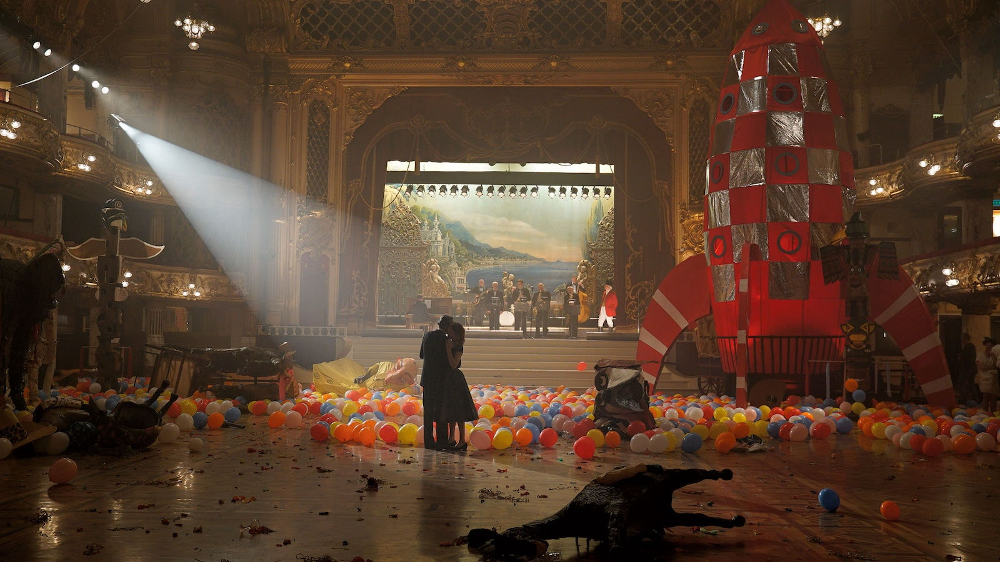

I have immense respect for filmmakers who are able to express their visions as meticulously and precisely as Paul Thomas Anderson. Each frame, each shot, each transition, each piece of music just works. It is hard to pinpoint what makes everything flow effortlessly, but nothing seems out of place or unfinished. This film showcases the extent to which someone can control the technical aspects of filmmaking -- and that is genuinely inspiring. PTA's artistic voice speaks so strongly in this movie, arguably more than in There Will Be Blood and The Master. From the start you are so effortlessly entrenched in the world that PTA has built. From the beautiful cinematography to the decadent and rich world that it captures, the visual landscape of this film overwhelms your senses. Films like this inspire us to believe that sometimes form truly is function.
Alongside the film's artistic richness, the tenderness of the story works like a charm. The characters feel fundamentally human with their flaws and weaknesses. The story in many ways is about the weaknesses in our nature and how they are often the reason our lives play out as they do. We don't have to agree with the motivations of the characters as long as we can understand them and they feel pure, which is exactly what this story achieves. The content of the story itself is some ways leave some more to be desired, but the film offers plenty enough for this to not bug me.
PTA is one of our best living filmmakers this movie is likely his magnum opus.